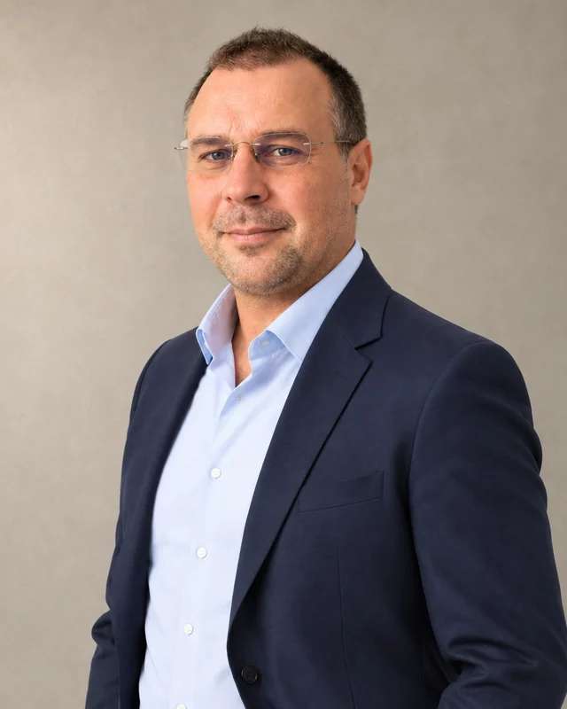
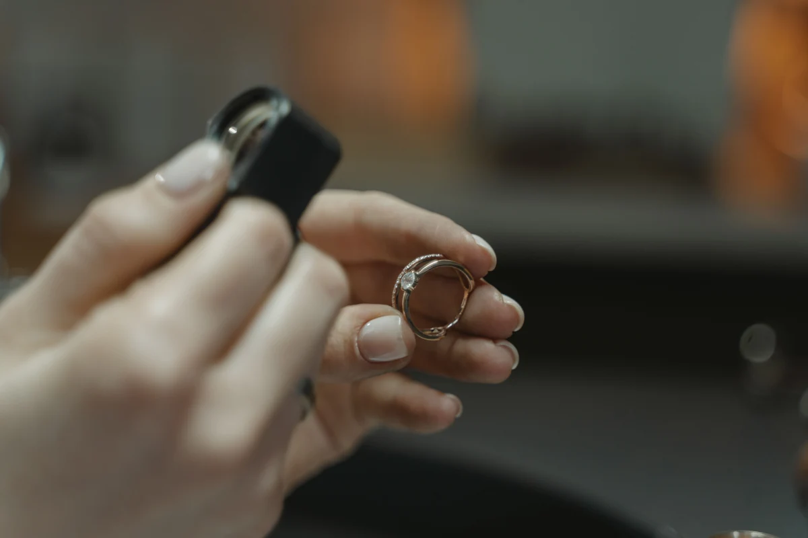

Bronze
Nennung zum Podcaststart
150 €
Ich nenne dein Unternehmen zum Start von Goldgezwitscher als Unterstützer. Wo die Nennung erscheint, vereinbaren wir vor deiner Zusage.
Bronze anfragenVideopodcast über Gold und Schmuck
Ich bin Dietmar Vogelmann. Meine Gäste schmieden Gold, prüfen Edelsteine oder handeln mit Schmuck. Im Podcast erzählen sie, wie sie angefangen haben und was sie an ihrer Arbeit bis heute begeistert.
Geplante Premiere am Im Kalender vormerken
Mein Titelsong


Mein Podcast
Auf Instagram und TikTok zeige ich, wie ich eine Goldmünze auf Echtheit prüfe. Wie jemand diesen Blick für sein Handwerk entwickelt hat, lasse ich mir lieber in Ruhe erzählen.
So kam ich auf die Idee zu Goldgezwitscher. Ich bin selbst Goldhändler in Karlsbad. Im Studio in Karlsruhe reden wir wie am Wohnzimmertisch. Wenn es fachlich wird, frage ich nach, damit du uns auch ohne Vorwissen folgen kannst.

Gast werden
Vielleicht hast du eine Werkstatt übernommen, handelst mit Edelmetallen oder hütest ein Erbstück, dessen Geschichte du erzählen möchtest. Schreib mir kurz, wie du dazugekommen bist und worüber du mit mir sprechen willst.
Sponsoring
Mit Goldgezwitscher spreche ich Menschen aus der Branche ebenso an wie Münzsammler und Schmuckliebhaber. Als Sponsor kannst du zum Start dabei sein, eine passende Folge auswählen oder die ganze Staffel begleiten.
Nennung zum Podcaststart
150 €
Ich nenne dein Unternehmen zum Start von Goldgezwitscher als Unterstützer. Wo die Nennung erscheint, vereinbaren wir vor deiner Zusage.
Bronze anfragenEpisodensponsoring
750 € je Folge
Wir wählen ein Gespräch, dessen Thema zu deinem Unternehmen passt. In dieser Folge stelle ich deinen Betrieb als Sponsor vor.
Silber anfragenFür die ganze Staffel
Auf Anfrage
Du begleitest mehrere Gespräche als Staffelpartner. Wir legen gemeinsam fest, in welchen Folgen und in welcher Form ich dein Unternehmen vorstelle.
Gold anfragenJa. Vielleicht besitzt du einen Ring, der in deiner Familie von Hand zu Hand gegangen ist, oder sammelst Münzen und kannst von einem besonderen Fund erzählen. Mich interessiert, was du selbst erlebt hast. Im Kurzprofil kannst du „Ich komme als Privatperson“ auswählen.
Ein paar Stichpunkte im Formular reichen mir. Schreib mir, wie du zu deinem Thema gekommen bist und über welches Erlebnis du gern sprechen würdest. Wenn du mir deine Arbeit zeigen möchtest, kannst du eine Website oder ein Social-Media-Profil verlinken.
Am Ende des Gastformulars kannst du deine Angaben als E-Mail vorbereiten und in Ruhe durchlesen. Deine Bewerbung erreicht mich, sobald du die Nachricht in deinem Postfach abgeschickt hast. Für Webmail kannst du den fertigen Text auch kopieren.
Wenn dein Thema zu einer Folge passt, melde ich mich per E-Mail, und wir verabreden uns zum Telefonieren. Du erzählst mir, was dir an deiner Geschichte wichtig ist. Danach entscheiden wir gemeinsam, ob wir das Gespräch im Studio in Karlsruhe aufnehmen.
Mit Bronze nenne ich deinen Betrieb zum Start als Unterstützer. Wo diese Nennung erscheint, besprechen wir vor deiner Zusage.
Ja. Beim Episodensponsoring mit Silber besprechen wir, welche Gespräche ich plane und welches Thema zu deinem Betrieb passt. In der vereinbarten Folge stelle ich deinen Betrieb als Sponsor vor.
Mit Gold begleitest du den Podcast über mehrere Folgen. Wir legen fest, über welchen Zeitraum und in welchen Folgen ich dein Unternehmen vorstelle. Auf dieser Grundlage mache ich dir ein individuelles Angebot.
Schreib mir, wo du dein Logo gern sehen würdest. Vor der Zusammenarbeit vereinbaren wir, ob und an welcher Stelle es erscheint und wofür ich es verwenden darf.
Erzähl mir in der Sponsoringanfrage kurz von deinem Betrieb und deiner Idee. Wenn du noch kein Paket im Sinn hast, wähle „Ich bin noch unsicher“. Ich melde mich per E-Mail, und wir besprechen die Einzelheiten, bevor du dich entscheidest.
Ich plane die Premiere für den . Die ganzen Gespräche veröffentliche ich kostenlos auf YouTube. Im Kalender vormerken
Ja. Wenn ein Gast zum Beispiel erzählt, wie er einen Edelstein beurteilt, frage ich, worauf er dabei achtet. Mich interessieren die kleinen Unterschiede, die du beim ersten Hinsehen vielleicht übersiehst.
Ja, ich plane Ausschnitte für Instagram, TikTok und YouTube Shorts. So kannst du dir erst einmal einen Eindruck vom Gast und vom Gespräch machen.
Über meinen Newsletter bekommst du den Link zur ganzen Folge und ein paar Zeilen zu meinem Gast. Ich kündige die Gespräche auch auf meinen Feingold-Vogel-Kanälen bei Instagram und TikTok an.

Wenn du Schmuck oder Münzen geerbt hast, kannst du sie mir bei Nachlassgold zeigen. Ich erkläre dir meine Bewertung und mache dir auf Wunsch ein Ankaufsangebot.
nachlassgold.de
Mit Feingold-Vogel handle ich mit Edelmetallen, Schmuck und Edelsteinen. Von dort stammt auch der goldene Vogel im Podcastlogo.
feingold-vogel.comWenn du Goldgezwitscher von Anfang an begleiten möchtest, findest du meine Crowdfunding-Kampagne auf Startnext.